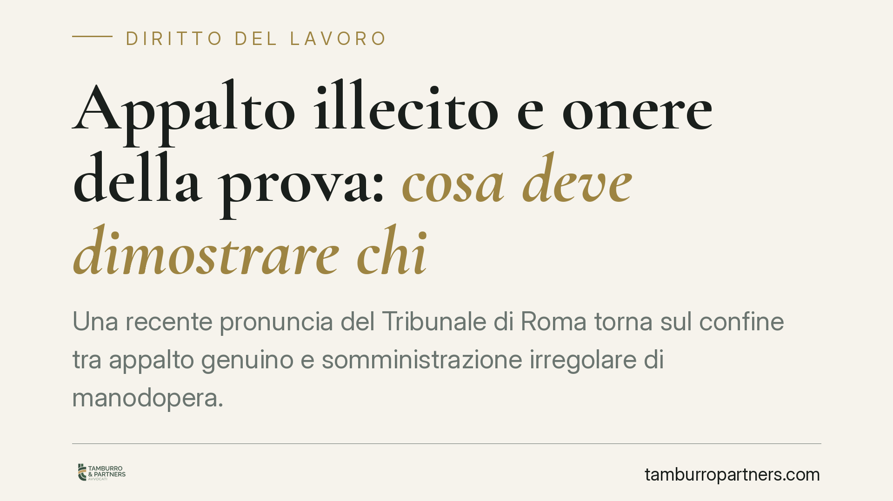

Appalto illecito e onere della prova: cosa deve dimostrare chi
Una recente pronuncia del Tribunale di Roma torna sul confine tra appalto genuino e somministrazione irregolare di manodopera. Il tema è l'onere della prova: cosa deve dimostrare il lavoratore che chiede di essere riconosciuto alle dipendenze del committente e cosa, invece, deve provare l'azienda per difendere la genuinità dell'appalto. Un equilibrio probatorio che incide su contenzioso e organizzazione d'impresa.

Il caso
Alcuni lavoratori addetti a servizi di portineria e accoglienza hanno agito in giudizio per vedersi riconoscere un rapporto di lavoro subordinato direttamente con l'azienda committente, sostenendo che l'appalto affidato a società terze fosse solo apparente.
Il Tribunale di Roma ha accolto la domanda, costituendo il rapporto in capo alla committente. Due gli elementi decisivi: l'assenza dei contratti di appalto documentati e l'impossibilità di ricondurre in modo chiaro la catena di subappalto a un'organizzazione d'impresa effettiva da parte degli appaltatori.
*Nota: gli estremi della sentenza (numero e anno) vanno verificati presso la fonte prima di ogni utilizzo in sede difensiva.*
Inquadramento normativo
La nozione di appalto genuino è fissata dall'art. 29 del D.lgs. 276/2003. L'appalto è lecito quando l'appaltatore organizza i mezzi necessari, assume il rischio d'impresa ed esercita il potere direttivo e organizzativo sui propri dipendenti. Quando questi elementi mancano — perché il personale è di fatto diretto dal committente e l'appaltatore si limita a fornire manodopera — l'appalto non è genuino e si traduce in una somministrazione di lavoro non autorizzata.
Gli effetti di tale somministrazione irregolare sono oggi disciplinati dagli artt. 38 e 39 del D.lgs. 81/2015. In particolare, il lavoratore può chiedere la costituzione di un rapporto di lavoro alle dipendenze dell'effettivo utilizzatore, cioè del committente che ha realmente beneficiato della prestazione e ne ha diretto l'esecuzione. È questo il meccanismo applicato dal Tribunale.
Il doppio livello dell'onere della prova
La pronuncia è utile perché distingue con chiarezza i due piani probatori.
Il lavoratore deve allegare e provare gli indici di non genuinità: l'inserimento stabile nell'organizzazione del committente, la ricezione di ordini e direttive da parte di quest'ultimo, l'assenza di una reale autonomia gestionale dell'appaltatore. Si tratta degli elementi di fatto che smentiscono l'apparenza contrattuale.
Il committente, dal canto suo, è chiamato a dimostrare la genuinità dell'appalto: l'esistenza dei contratti, l'autonomia organizzativa dell'appaltatore, l'effettivo esercizio del potere direttivo da parte di quest'ultimo. Questo onere non deriva da un'inversione legale tipizzata, ma dall'applicazione del principio di vicinanza (o riferibilità) della prova: documenti contrattuali, organigrammi e flussi gestionali sono nella disponibilità dell'impresa, non del lavoratore. È quindi coerente che sia la parte più vicina alla fonte probatoria a fornirli.
Si tratta di un orientamento giurisprudenziale, non di una regola generale consolidata: va applicato caso per caso, in relazione alla concreta disponibilità delle prove.
Implicazioni pratiche
Per l'azienda committente il messaggio è netto: non basta dotarsi di un contratto di appalto formalmente corretto. Occorre che l'operatività quotidiana sia coerente con quella forma. Se il personale dell'appaltatore riceve ordini diretti dal committente, utilizza esclusivamente mezzi di quest'ultimo e non risponde a un'organizzazione autonoma, il rischio di riqualificazione è concreto.
L'assenza o la lacunosità della documentazione contrattuale e gestionale aggrava la posizione dell'impresa: in giudizio, il vuoto probatorio sui requisiti di genuinità tende a giocare a sfavore di chi avrebbe dovuto conservare e produrre quei documenti.
Per il lavoratore, la pronuncia conferma la praticabilità dell'azione volta a far emergere il rapporto reale dietro l'appalto apparente, con tutte le conseguenze su inquadramento, anzianità e trattamento retributivo.
Cosa fare in concreto
- Verificate la catena contrattuale: archiviate e aggiornate i contratti di appalto e subappalto, assicurandovi che ogni passaggio sia tracciabile e riferibile a un soggetto identificato.
- Separate le linee gerarchiche: fate in modo che le direttive al personale dell'appaltatore passino sempre dai referenti dell'appaltatore, mai direttamente dal committente.
- Documentate l'autonomia dell'appaltatore: conservate prova di mezzi, attrezzature, know-how e organizzazione effettivamente impiegati dall'impresa affidataria.
- Mappate i servizi a rischio: portineria, accoglienza, pulizie e servizi labour intensive meritano un controllo prioritario, perché più esposti a contestazioni di non genuinità.
- Rivedete i contratti in essere con un controllo di coerenza tra testo e prassi operativa, intervenendo prima che una vertenza renda evidente lo scostamento.
Consigliamo un audit periodico degli appalti di servizi, con particolare attenzione alla documentazione gestionale: è spesso lì che si decide l'esito di un contenzioso.
Disclaimer
Contributo informativo a cura di Tamburro & Partners. Non costituisce parere legale.
Ogni storia di lavoro ha i suoi tempi.
Se gestisci HR e vuoi un confronto su contenzioso, ispezioni o licenziamenti, scrivi allo studio. Ti rispondiamo entro un giorno lavorativo.